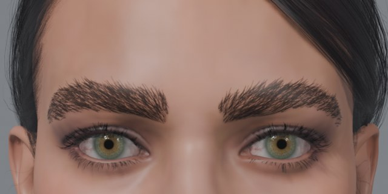

Ordre des signes LSF
Temps et lieu d’abord, verbe en fin de phrase, mot interrogatif à la fin : la phrase française est réorganisée selon la grammaire de la LSF.
Forum Hackathon · IA éthique · LSF
Écrivez une phrase, parlez, ou chargez un film sous-titré : SignaCulture la traduit en LSF, avec l’ordre des signes et le visage grammatical, et un avatar 3D la signe en direct.
Démo en direct
La phrase s’ouvre dans le Studio, qui la traduit et la fait signer immédiatement.
Nouvel avatar
En LSF, les sourcils, la bouche et la tête font partie de la phrase. Notre avatar MetaHuman dispose de 51 expressions faciales, de sourcils dessinés poil par poil et de mains bien lisibles sur une tenue sombre, comme une interprète.



Fonctionnalités
Temps et lieu d’abord, verbe en fin de phrase, mot interrogatif à la fin : la phrase française est réorganisée selon la grammaire de la LSF.
Questions marquées par les sourcils et la tête, négation par un hochement de tête, clignements placés à la fin des propositions.
C0, un modèle génératif entraîné sur des interprètes, signe n’importe quelle phrase. B2 enchaîne de vrais signes du lexique avec des transitions apprises.
Importez un enregistrement : la parole est transcrite (Whisper) et l’émotion de la voix (emotion2vec) module l’amplitude et le rythme des gestes.
Un film et ses sous-titres français : chaque réplique est traduite et signée en synchronie, à côté de l’image, comme une interprète à l’écran.
Respiration, regard, inertie des bras et des doigts, queue de cheval qui suit la tête : l’avatar reste naturel même entre deux signes.
Fonctionnement